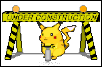

Bem-vindo a este incrível site dos anos 90
Os sites nos anos noventa eram repletos de cores e imagens!
A qualquer momento poderia aparecer um GIF animado, dizendo que a pagina estava em construção, mesmo não estando!

Sem muito padrão
Uma boa quantidade dos sites da época não era muita conhecida por ter padrão
A não ser que o padrão fosse "não ter padrão" ;)
Talvez pela falta de conteudo, talvez pela falta de elementos disponiveis no HTML e CSS, as paginas usavam muitos, muitos fundos!
Por exemplo, esse parágrafo!
Ele tem seu próprio fundo, combinando com o site, claro ;)
Não acredita?
Então acesse um dos dois links abaixo para poder ver uma copia arquivada do hostsite criada para o filme Space Jam de 1996:
www.warnerbros.com/archive/spacejam/movie/jam.htm
www.spacejam.com/archive/spacejam/movie/jam.htm